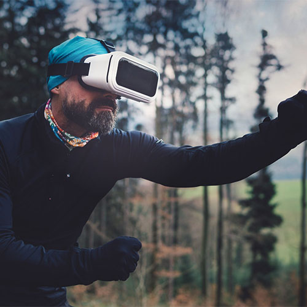

Le but est d'immerger totalement l'utilisateur dans un monde en 3D. Pour que l'immersion soit totale, Il faut placer l'oeil dans un univers dans lequel il ne pourra pas sortir Prenons l'exemple d'une télévision: il y à une limite bien visible, c'est la bordure de l'écran. Dans le cas de la réalité virtuelle, on cherche à tromper l'oeil et à cacher ses limites.
Et bien, il y a un écran devant chaque oeil, si proche qu'il ne peux pas percevoir les bordudes.
De plus, les images 3D sont envoyées à chaque oeil avec un léger décallage. Exactement
comme dans la vraie vie. Ainsi le cerveau analyse les deux images et on obtient une impression de 3D.
L'écran est tellement proche de l'oeil qu'il faut une résolution suffisement élévé pour
ne pas appercevoire les pixels.
En effet, si on veut une immersion totale il faut que l'image bouge en fonction de notre positionement. Quand on tourne la tête, l'image doit changer aussi. Il y a donc des capteurs de mouvements dans l'appareil qui permettent d'orienter l'image à 360 degrés.
On peut également rajouter le son. Avec un son en stéréo, on amplifie l'impression de se trouver dans un univers à part entière.